本文讲述如何用hexo搭建个人博客，并托管到github。不需要租赁服务器，可完成网站博客的搭建。
安装Hexo
安装hexo之前，要先下载安装Node.js和Git，百度搜索找到下载即可。
Git下载地址
Node.js下载地址
在本地建立一个文件夹，我的文件夹为D:github/hexotest。
接下来可以进入这个文件夹右键Git Bash 或者通过命令号cmd进入这个文件夹
输入如下命令：
1 | npm install hexo-cli -g |
效果如下所示：
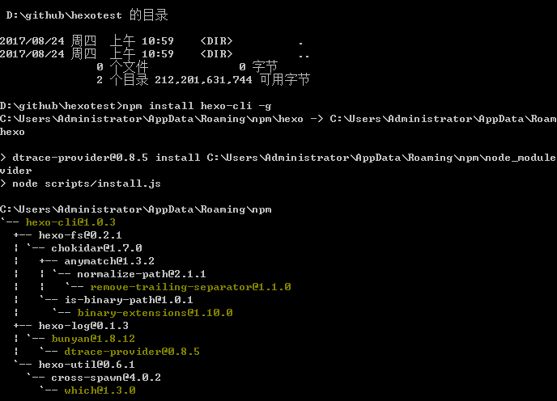
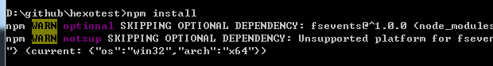
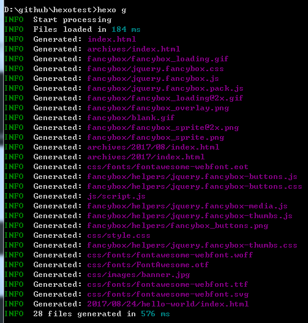
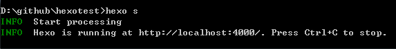
通过http://localhost:4000 查看效果
如果无法显示，那么可能是端口被占用
hexo server -p 6666
指定端口启动，可看到网页了
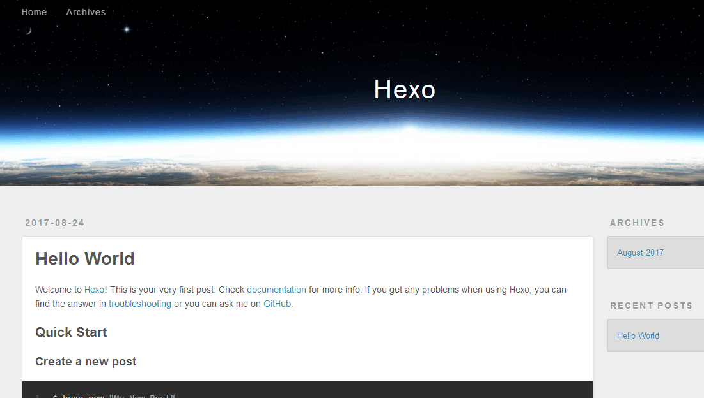
默认主题为landscape，比较简陋，可以自己下载喜欢的主题，将下载的主题放到themes文件夹下，并且修改_config.yml可以实现主题的替换。
重启:
1 | hexo g |
可以看到效果
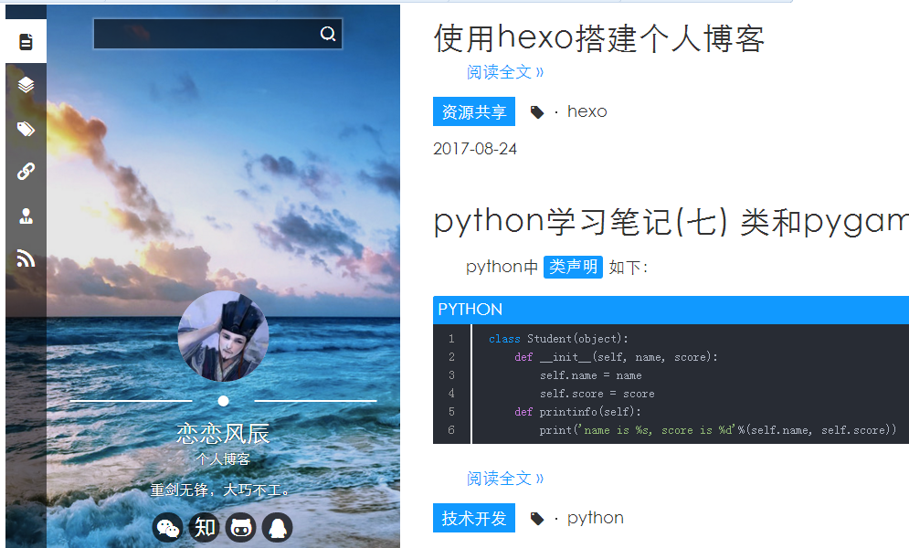
创建文章和页面
创建文章
1 | hexo new "文章名" |
创建页面
1 | hexo new page "页面名" |
命令常用简写
1 | hexo n == hexo new |
目前就可以写一写文章，并且启动hexo生成和运行，本地博客搭建完成了。下面将github和本地的hexo部署联合起来，实现远程的访问和托管。
github建立博客仓库和配置
在Github首页右上角点击 New repositor创建一个仓库. 注意仓库名字要为:你的用户名.github.io
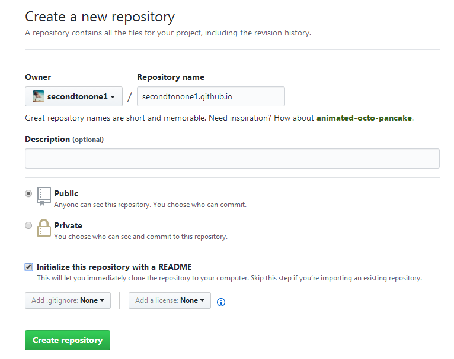
开启github pages服务
仓库创建完后可以点击settings设置开启pages服务
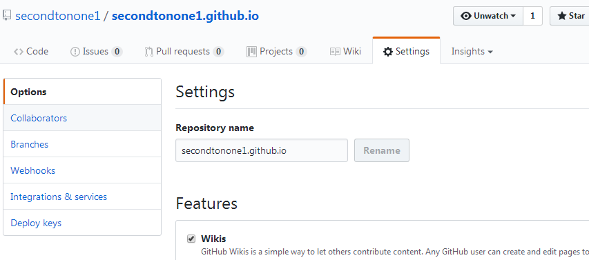
设置pages
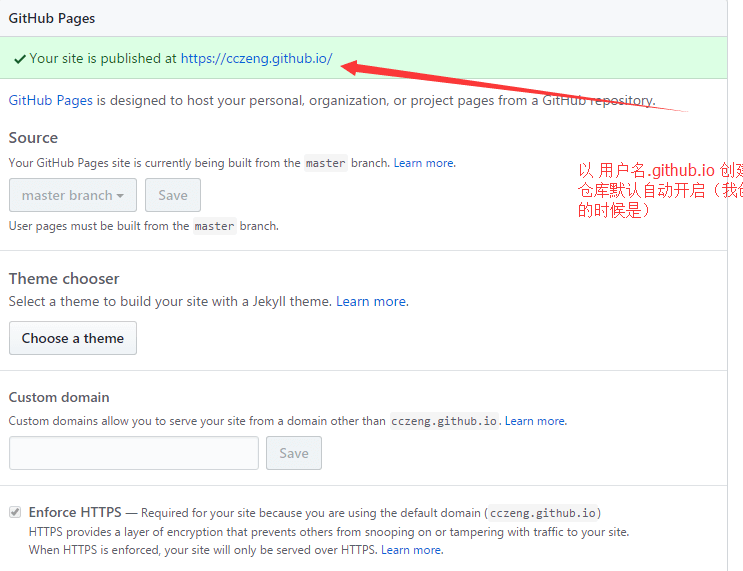
点击选择主题 choose themes
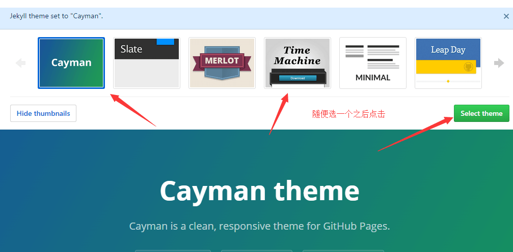
目前博客github仓库的创建和配置完成，如果以后购买了域名，可以将github pages 地址绑定为购买的域名即可。
将hexo 和github 关联起来
还是编辑根目录下_config.yml文件
1 | deploy: |
安装该扩展主要是为了支持hexo d 命令。
接下来就是将Hexo部署到我们的Github仓库上:
命令行输入 hexo d 会自动将当前的博文生成html并且发布到github进行托管，在浏览器输入 secondtonone1.github.io (secondtonone1用户名替换为你自己的)即可浏览自己的博客了。这样就完成了github和hexo的关联部署。值得改进的地方是，每次调用hexo d 上传到github，都会提示输入github的用户名和密码，非常不方便
可以通过SSH keys的设置，达到不输入密码直接发布的目的。
SSH keys的配置
在Git 命令行输入如下命令：
1 | $ ssh-keygen -t rsa -C "secondtonone1@163.com" |
secondtonone1@163.com 替换为你的github邮件地址
Git显示：
1 | $ ssh-keygen -t rsa -C "secondtonone1@163.com" |
系统会要求你输入密码，这里设置的密码主要是在你提交Git时弹出密码认证，不想输入直接回车
1 | Enter passphrase (empty for no passphrase):<输入加密串> |
配置ssh和github仓库
找到id_rsa.pub 并复制文件内容
id_rsa.pub文件一般位于电脑用户配置文件夹下的一个.ssh文件下C:Users你的用户名.ssh
登录Github并添加密钥
进入github首页在右上角选择settings设置。
测试通过git bash链接到Git
链接Git
1 | $ ssh -T git@github.com |
提示如下：
1 | yes |
以后每次提交博文到github就不需要输入密码了，很方便。配置好后清除之前的记录，重新生成并提交，可以登录自己的github仓库地址(secondtonone1@163.com)查看博文了
1 | hexo clean |
配置域名和github的关联
我在阿里云购买的域名，进入控制台，在域名管理添加如下两条记录
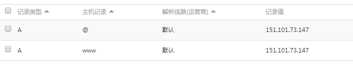
151.101.73.147为我的github地址，可以通过如下命令获取：
ping secondtonone1.github.io
名字换为你自己的github仓库
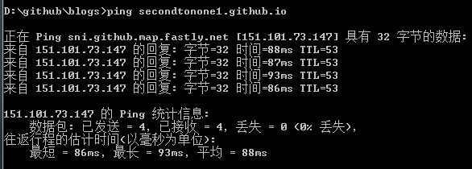
登录github，选择博客仓库，点击settings选项，浏览到pages这部分，将Custom domain填写为你的域名
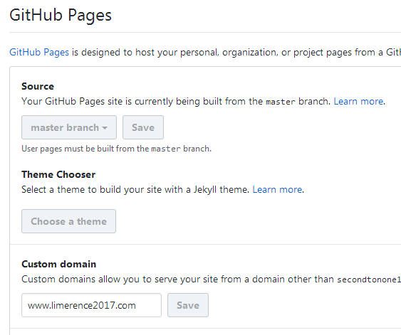
这样会在博客仓库中生成CNAME文件，文件中记录的是我的域名。
这样，在浏览器输入我的域名www.limerence2017.com就可以浏览我的博客了。这么做还有个地方要完善，就是每次执行hexo d 命令后， CNAME文件被rush掉了。
需要在博客目录下的sources文件夹下建立一个CNAME文件，写上自己的域名，这样每次提交CNAME文件就会生成在github中，避免了上述问题。
让你的博文添加图片
1 把主页配置文件_config.yml 里的post_asset_folder:这个选项设置为true
2 在你的hexo目录下执行这样一句话npm install hexo-asset-image –save，这是下载安装一个可以上传本地图片的插件
3 等待一小段时间后，再运行hexo n “xxxx”来生成md博文时，/source/_posts文件夹内除了xxxx.md文件还有一个同名的文件夹
通过branch实现博客的备份和发布
可以通过github 的branch进行数据备份，master 用来发布。
为你的hexo添加css插件和一些扩充插件
1 | $ npm install hexo-renderer-sass --save |
其他的一些扩充功能，比如留言板，访客记录，赞赏之类的自己去扩充和学习吧。
我的博客地址为：www.limerence2017.com 刚刚建立不到一个月，写了一些文章，以后可以修改和完善。
我的公众号，谢谢关注：